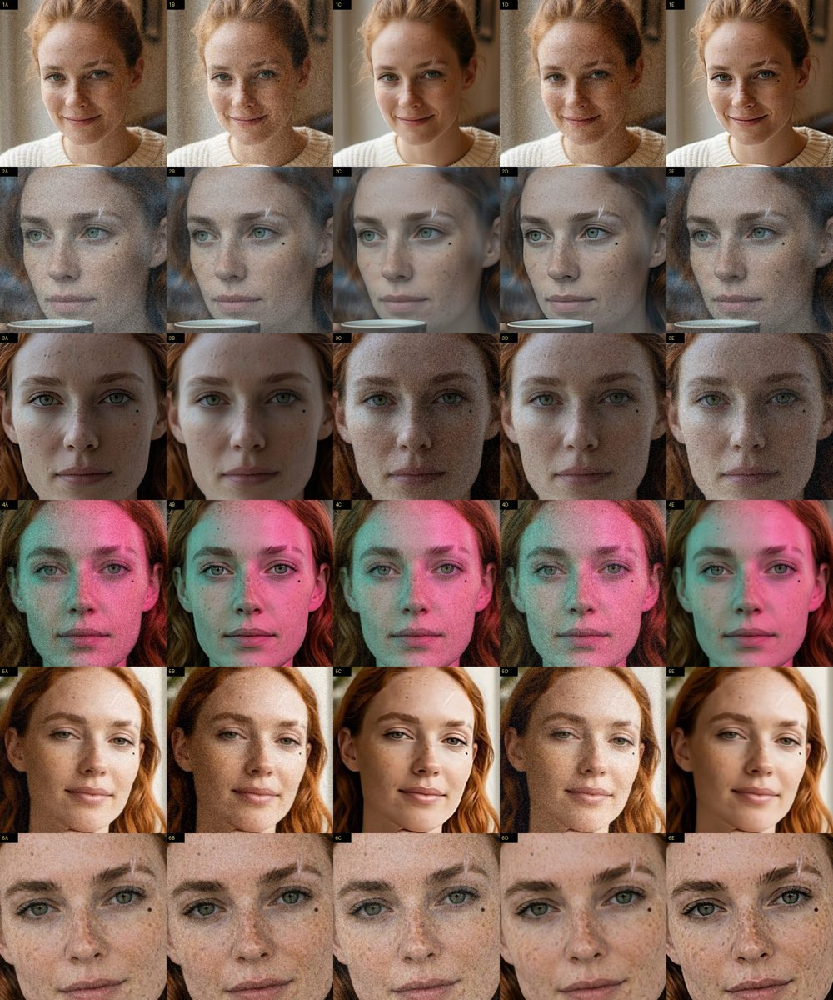
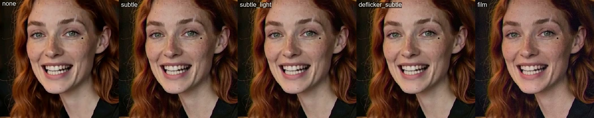

Как сделать сгенерированный кадр и ролик похожими на снятые камерой — и не потерять при этом лицо персонажа.
У сгенерированного кадра слишком гладкая кожа, слишком чистый цвет и ни одного случайного пикселя. Настоящая камера всегда добавляет шум матрицы, лёгкое смещение цветов по краям и свою цветокоррекцию. В серии 4 мы проверили два способа «состарить» готовый кадр. Генеративный финиш — ещё один слабый проход модели поверх кадра. Пиксельный финиш — зерно, цветокоррекция и хроматическая аберрация обычной обработкой, без нейросети. Проверяли на кадрах вымышленного персонажа Марен: у неё есть родинка под глазом и шрам у брови, и по ним сразу видно, сохранилась ли личность.
Три кадра Марен из Qwen-Edit (кафе, окно с дождём, крыша) прошли через проход Krea 2 по всему кадру (denoise 0,12 / 0,2 / 0,3) и FaceDetailer (0,3 / 0,45). Промпт — общие слова про кожу. Один проход — около 6 с.
| Проход | ArcFace к эталону (кафе / окно / крыша) | На глаз |
|---|---|---|
| без прохода | 0,55 / 0,56 / 0,59 | кожа слегка пластиковая |
| кожа 0,12 | 0,50 / 0,49 / 0,60 | фактура живее, но родинка тонет в веснушках, шрам бледнеет |
| кожа 0,3 | 0,40 / 0,32 / 0,54 | самый «фотографичный» — и уже другое лицо, примет нет |
| FaceDetailer 0,3 | 0,39 / 0,35 / 0,55 | лицо перерисовано моложе, почти подростком; приметы пропали |
| то же с описанием персонажа вместо слов про кожу, без LoRA реализма | 0,50 / 0,50 · 0,45 / 0,37 | возраст снова около 30, но приметы всё равно пропали |
Скрипт finish.py делает готовые «виды»: subtle (лёгкий цвет, аберрация 0,6 px, зерно 0,025), phone (резкость и шум телефона), film (плёночное зерно 0,03), soft и none. На 2-мегапиксельных кадрах Krea фактура кожи уже есть, и зерно мало что добавляет. Сильнее всего оно меняет 1-мегапиксельные кадры Qwen-Edit и кадры из видео H3.

soft.subtle; для селфи и бытовых кадров — phone. ПРАВИЛОСоветы 2026 года для ИИ-видео дают тот же порядок, что и у нас: выровнять, покрасить, добавить зерно 2–3 %, чуть смягчить. Мы прогнали пять видов на двух клипах H3: 9,4 с в баре и говорящий план. Мерцание — среднее изменение яркости лица от кадра к кадру. Зерно — энергия высоких частот.
| Вид | Мерцание: бар / речь | Зерно: бар / речь |
|---|---|---|
| none | 0,55 / 0,27 | 6,0 / 5,4 |
| subtle | 0,53 / 0,26 | 9,0 / 8,6 |
| subtle_light (зерно слабее) | 0,53 / 0,27 | 7,4 / 7,0 |
| deflicker + subtle_light | 0,48 / 0,36 (хуже) | 7,4 / 7,0 |
| film | 0,49 / 0,24 | 9,9 / 9,6 |

deflicker из ffmpeg — не по умолчанию. Бару он помог, а говорящему клипу навредил: выровнял настоящую мимику и игру света. Только для клипов, которые заметно «пульсируют».subtle_light: тот же subtle, но зерно слабее. ПРАВИЛОУ H3 первые кадры резче остальных: модель ещё «держит» исходную картинку, потом переходит в своё видео. Резкость лица (по Лапласиану) падает с 135 до 56 и со 165 до 95 между кадрами 0–2 и 9–11 — ещё до начала движения. Лечение — в раскадровке написать паузу 0s-0.5s: she holds completely still, settling и потом отрезать эти полсекунды стандартной нодой Video Slice: она режет и кадры, и звук по времени.
03 есть поле cut lead-in (s) со значением 0 по умолчанию; ставьте 0,5, когда начало видимо «прыгает».subtle (или phone для селфи). Видео: subtle_light. Без обработки не оставлять.Для ИИ-агентов: эта глава в Markdown · llms.txt